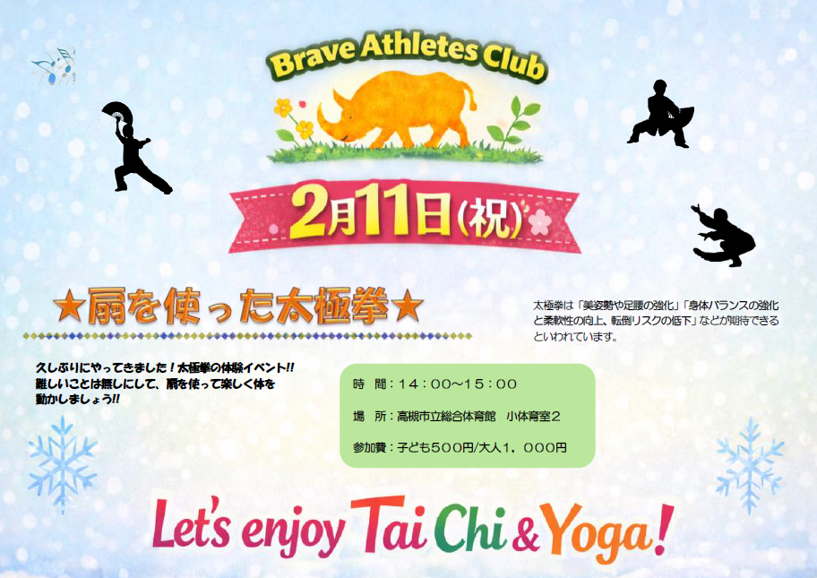
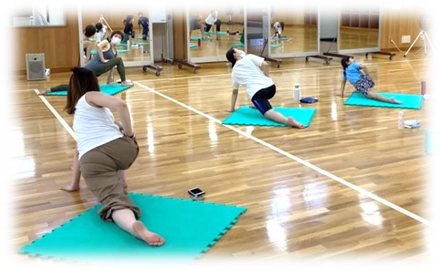

14:00-15:00
扇を使った太極拳
2026年2月11日（祝）｜高槻市立総合体育館 小体育室２

扇を使いながら、姿勢と呼吸を整えていくやさしいプログラムです。
肩まわり・背中・股関節などを「ゆっくり大きく動かす」ことで、日常のこわばりをほどきやすくします。
- 目的：姿勢・呼吸・バランス感覚を整える
- おすすめ：運動が久しぶりの方／リラックスしたい方
- 服装：動きやすい服装（室内シューズ推奨）
※ はじめての方も歓迎です。動きは参加者に合わせて調整しますので、安心してご参加ください。
15:30-16:30
ファミリーで参加できるヨガ
2026年2月11日（祝）｜高槻市立総合体育館 小体育室２

親子・ご家族で一緒に参加できる、やさしいヨガクラスです。
からだをほぐして呼吸を深め、終わったあとに「すっきり」を感じられる内容を目指します。
- 目的：柔軟性・体幹・呼吸を整え、心身をリフレッシュ
- おすすめ：親子で運動習慣を作りたい方／家族で楽しみたい方
- 持ち物：タオル、飲み物（ヨガマットは可能ならご持参ください）
※ 年齢・性別を問わずご参加いただけます。動きは無理のない範囲で調整しますので、初めての方も安心してご参加ください。